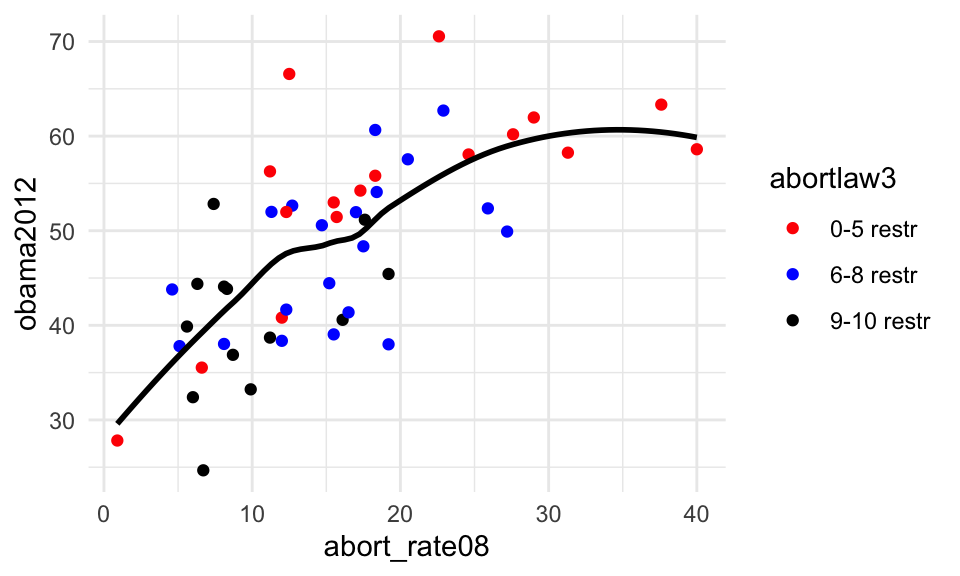

Chapter 12 Generalized linear models
Generalized linear models have several similarities with the linear model introduced in the previous chapter. Specifically, generalized linear modeling is a framework for statistical analysis that includes the linear model as a special case.
To show this, we will first compare the function for generalized linear models, glm(), to the function for linear models, lm(). We will use the data from Careja, Elmelund‐Præstekær, Klitgaard, & Larsen (2016) on whether a policy is a retrenchment or not (our outcome) and whether we are looking at a right-wing government or not (as our independent variable). First, we save the data in the object prw (and as always, remember to load the tidyverse).
library("tidyverse")
prw <- read_csv("https://raw.githubusercontent.com/erikgahner/sps-prw/master/analysis/prw.csv")We will run the linear model using both lm() and glm() and use tidy() in the broom package to save the parameters in prw_lm and prw_glm, respectively.
library("broom")
prw_lm <- prw %>% lm(retrenchment ~ rwgov, data = .) %>% tidy()
prw_glm <- prw %>% glm(retrenchment ~ rwgov, data = .) %>% tidy()Next, we get the output from prw_lm. Here, we see that the intercept is 0.229 and the coefficient for rwgov is 0.0971.
prw_lm## # A tibble: 2 x 5
## term estimate std.error statistic p.value
## <chr> <dbl> <dbl> <dbl> <dbl>
## 1 (Intercept) 0.229 0.0325 7.04 9.73e-12
## 2 rwgov 0.0971 0.0466 2.08 3.78e- 2In prw_glm below we can see that we get the exact same output as for the linear model. (You can also use prw_lm == prw_glm to see that all information is the exact same in the two objects).
prw_glm## # A tibble: 2 x 5
## term estimate std.error statistic p.value
## <chr> <dbl> <dbl> <dbl> <dbl>
## 1 (Intercept) 0.229 0.0325 7.04 9.73e-12
## 2 rwgov 0.0971 0.0466 2.08 3.78e- 2We are using the glm() function because it allows many of the most communly used generalized linear models.
12.1 Binary outcomes
If you have a binary outcome, you will most likely run a logit model with glm() instead of a linear model with lm(). However, when we run a logistic regression model with glm(), we do not get easily interpretable unstandardized regression coefficients as with the lm() model. Instead, glm() return the coefficients in the form of logits that we would like to see as probabilities.
To estimate a simple logistic regression model we are going to use the prw data imported into R above and reproduce Model 1 in Table 2 in Careja et al. (2016). We are saving this model in the object model_retrenchment. Here, to tell R that we are interested in a binomial logistic regression, we simply add ‘family = "binomial"’ to the function.
model_retrenchment <- glm(retrenchment ~ rwgov, data = prw, family = "binomial") As for all models, we can use summary() to get the output.
summary(model_retrenchment)##
## Call:
## glm(formula = retrenchment ~ rwgov, family = "binomial", data = prw)
##
## Deviance Residuals:
## Min 1Q Median 3Q Max
## -0.8880 -0.8880 -0.7207 1.4976 1.7177
##
## Coefficients:
## Estimate Std. Error z value Pr(>|z|)
## (Intercept) -1.2155 0.1736 -7.000 2.56e-12 ***
## rwgov 0.4885 0.2361 2.069 0.0385 *
## ---
## Signif. codes: 0 '***' 0.001 '**' 0.01 '*' 0.05 '.' 0.1 ' ' 1
##
## (Dispersion parameter for binomial family taken to be 1)
##
## Null deviance: 431.22 on 365 degrees of freedom
## Residual deviance: 426.89 on 364 degrees of freedom
## (52 observations deleted due to missingness)
## AIC: 430.89
##
## Number of Fisher Scoring iterations: 4In the output, we see that there is a positive effect of rwgov (a positive coefficient under Estimate) and that the p-value is statistically significant at a .05-level (0.0385). Accordingly, we can make some of the same interpretations as when looking at OLS regression models.
However, we need to convert the logit output into probabilities. To do this, we need to convert the logit coefficients to odds and then to probabilities. The easiest way to do this is to use the plogis() function. If we take the intercept in the model, -1.2155, and put it into plogis(), we get:
plogis(-1.2155)## [1] 0.2287293Accordingly, the predicted probability of a left-wing government pursuing a retrenchment policy is 0.2287, or, 22.87%. If we want to calculate the predicted probability for a right-wing government, we simply add the coefficient for rwgov.
plogis(-1.2155+0.4885)## [1] 0.3258534Here we see that the predicted probability for right-wing governments is 0.3259, or 32.59%.
Luckily, there are easier ways to get these numbers. Specifically, we are going to use the augment() function (from the broom package) introduced in the previous chapter and specify that we would like to predict the response for the model. We then want to group the predicted probabilities by the coefficient of interest and get the average predicted probability.
augment(model_retrenchment, type.predict = "response") %>%
group_by(rwgov) %>%
summarize(fitted = mean(.fitted)) ## # A tibble: 2 x 2
## rwgov fitted
## <dbl> <dbl>
## 1 0 0.229
## 2 1 0.326As we can see, these predicted probabilities are the same as those obtained with plogis().
Last, this works similarly with continuous variables. To show this, we are going to use year as the predictor variable and, in addition to the code above, plot a line with ggplot2.
# Estimate model
glm(retrenchment ~ year, data = prw, family = "binomial") %>%
# Get predicted probabilities (response)
augment(type.predict = "response") %>%
group_by(year) %>%
summarize(fitted = mean(.fitted)) %>%
# Plot the predicted probabilities
ggplot(aes(year, fitted)) +
geom_line()
12.2 Other models
12.2.1 Event count
The model introduced above also works with count data such as Poisson regression. To do this, you simply specify the family as poisson(link=log).
glm(OUTCOME ~ PREDICTOR, data = DATAFRAME, family = poisson(link=log)) 12.2.2 Negative binomial regression
To conduct negative binomial regression models requires the glm.nb() function in the library MASS.
12.2.3 Ordinal outcomes
For ordinal outcomes, you should use the polr() function (short for proportional odds logistic regression), which is also part of the MASS package.